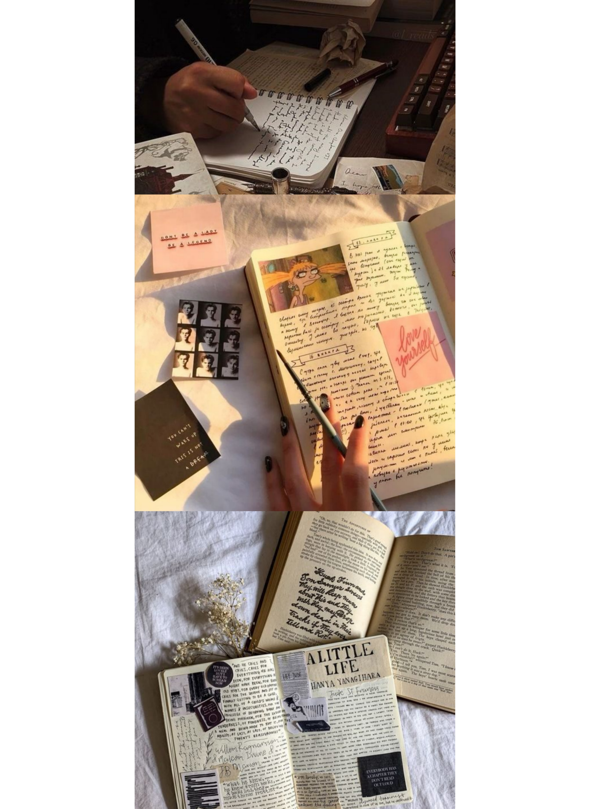

Journaling is writing your emotions and thoughts to see them clearly.

First thing , you need a paper , notebook either physical or digital to write in.
Then , the actual writing begins , which most people find hard. However , it's easier than what you think.
You need to write for yourself , free yourself of any judgment because your eyes will only read your journal.
Many people start their journals by writing the things they are grateful for. It's eligible for you to write three things you are grateful for everyday .
It is found that it helps to deal with fear of feature and to live in the moment. It is recommended to write at the beginning of the day.
Writing and recording your day is one of the things recommended to be done in your journal. It can provide an overlook of your day and helps you to live in
the moment and to appreciate the small details you have in their life.
To know more , please read the following blogs :